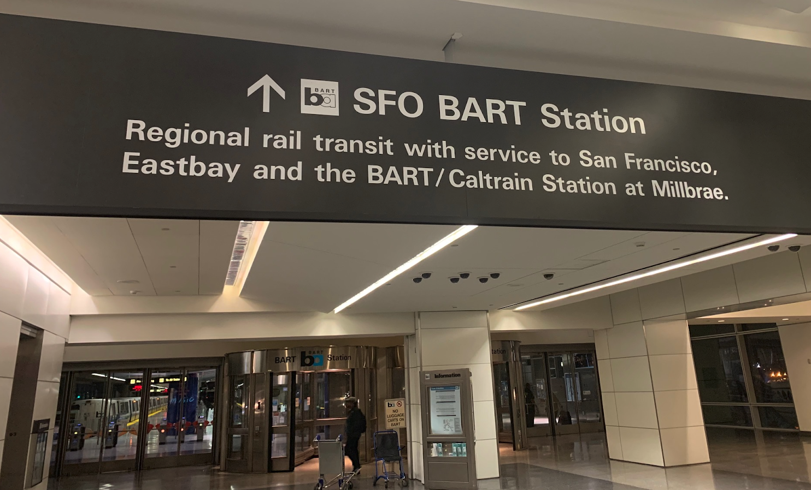

|
A printer friendly version of transit instructions can be downloaded here.
|
|
|
Limited Mobility: If you have requests for accommodations related to limited mobility, please contact 2019icaps@gmail.com before June 7th and we will attempt to find aid.
|
|
The city of Berkeley is near both Oakland International Airport (OAK) and San Francisco International Airport (SFO). If you arrive during BART subway operating hours (see below), both options have reasonable public transit options that will arrive near to conference accommodations and venues. If you plan to take a taxi (or ride share service), OAK will likely provide the least expensive and quickest transit. However, SFO provides more international and domestic flights that are typically less expensive.
|
Note: Although Mineta San Jose International Airport (SJC) is sometimes included in flight search results, it is quite far from the venue. We do not recommend it unless you have other business in the area.
|
|

Clipper Card automated kiosk.
Public domain photo by J. Benton
Clipper cards allow easy public transit fare payment across the Bay Area (including on buses and trains). They use a contactless RFID. Using a Clipper card avoids the need to carry currency for buses. You may obtain these at the train stations at the San Francisco International Airport, Oakland International Airport, and at the Downtown Berkeley Station. They cost 3 USD but most public transit services offer fare discounts when you use a Clipper card. Fare money can be added at any train station (for immediate availability) or at clippercard.com (available within 2 days).
If you arrive outside of BART boarding hours (listed below) you will need to take a taxi or rideshare (Lyft or Uber) service to the venue. BART train allowed boarding hours:
-
Monday through Friday: 4 am (0400) to 11:59 pm (2359)
-
Saturday: 6 am (0600) to 12:01 am (2359)
-
Sunday: 8 am (0800) to 12:01 am (2359)
Last trains:
-
San Francisco International Airport BART Train (Yellow Line) leaves at 11:54 pm
-
Oakland International Airport BART (Beige Line/Shuttle) leaves at 12:01 am
The Bay Area Rapid Transit (BART) subway system services both the Oakland International Airport and the San Francisco International Airport. To reach ICAPS 2019 when taking BART a reasonable subgoal is exiting the train at the
Downtown Berkeley Station.
The main bus company operating within Berkeley is called
AC Transit. They charge 2.35 USD per ride and request exact change when boarding (though you may pay 3 USD and they will not complain). To avoid the need to carry money, you may purchase a Clipper card and add adequate funds to it.
Please see below for instructions on reaching ICAPS 2019 accommodations from San Francisco International Airport (SFO) and Oakland International Airport (OAK).

Sign in front of the SFO Bart Station inside the San Francisco International Airport.
Public domain photo by J. Benton
To get to the station, look for and follow signs for BART or BART/Caltrain or ask airport staff at an Information Kiosk to assist you.
You will need either a Clipper card (see above) or a BART ticket. Those can be purchased in the station at automated kiosks.
Board the
yellow line train in the direction of San Francisco-Pittsburg-Bay Point. Transfer to the
red or
orange Richmond line at 19th-Street Oakland. Exit at the Downtown Berkeley Station.
Some notes for those using transit directions from other sources (e.g., Google Maps):
-
You can change to the red or orange lines at several stations, but we recommend using the 19th-Street Oakland station when you have luggage.
-
You may also take the purple line to the Millbrae station (also called the BART/Caltrain station) to transfer to the red line.
You will need to exit the terminals to reach the BART station. Take the Oakland International Airport BART to the Coliseum station. This service is sometimes called the
"beige line", but BART does not refer to it as such. From the Coliseum station take the orange line headed towards Richmond. Exit at the Downtown Berkeley station (~25-minute ride).
Hotel Shattuck Plaza is one street block away from Downtown Berkeley Station; it is very close (about 130 meters/450 feet). After exiting the station proceed south toward the street called Allston Way.
If you approached Center Street, you probably went the wrong direction. You will see a Walgreens Pharmacy as you reach Allston Way. Cross to the south side of Allston and follow it west from that corner. You will see the Hotel Shattuck Plaza on your left. You should only need to cross Allston.
If you crossed two streets, you likely made a mistake. If you reached Milvia Street, you may have passed the Hotel Shattuck Plaza without realizing it.
© Google Maps
Resident Hall Unit 1 is at 2650 Durrant Street, Berkeley, CA (
https://goo.gl/maps/waY2KFiKNK5utiar7). You may either take public transit, walk, or use a rideshare service (e.g., Uber or Lyft) to Residential Hall Unit 1. To ride buses you must pay 2.35 USD with correct change per ride. If you do not have correct change, you may pay more than the fare amount but bus drivers will not provide change back to you. For convenience, it may be beneficial to purchase a Clipper card at a train station if you plan to ride the bus often during your stay at Berkeley.
If you have limits on mobility we suggest a rideshare service over transit with a bus from Downtown Berkeley Station to Resident Hall Unit 1. The walk to and from the bus stops totals to approximately 0.2 miles (0.3 km) to 0.5 miles (0.75 km) depending on the route you take. To obtain bus instructions, please use one of the services listed on the AC Transit site, as the best options change throughout the day (
http://www.actransit.org/trip-planner/).
It is approximately a 0.9 mile (1.5 km) walk in total. To walk there, proceed south toward a street called Allston Way.
If you approached Center Street, you probably went the wrong direction. You will cross Kittredge Street and Bancroft Way. You will walk approximately 0.5 km (approximately 0.25 miles) to reach Durrant Street. Turn left (east) on to Durrant Street. You will cross Fulton Street.
If you reached Milvia Street, you probably went the wrong direction. You will then cross Ellsworth Street, Dana Street, Telegraph Avenue, and Bowditch Street. You will see a building with a "Unit 1" sign next to the address 2650 Durant. This is your destination.
If you reached College Avenue, you probably went a bit too far.
Resident Hall Unit 1 sign.
Public domain photo by J. Benton